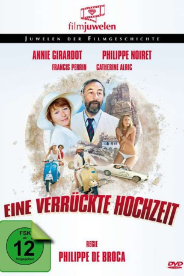
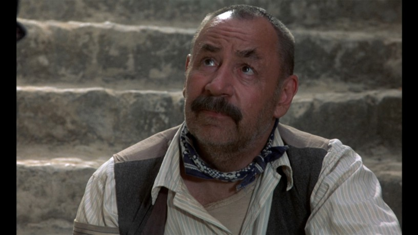

#11672 Wer hat Jupiters Po gestohlen?
Alternativ: Wer hat den Schenkel von Jupiter geklaut? Eine verrückte Hochzeit (Englischer Titel)
 
 IMDB-Wertung: 6.2 / 10
IMDB-Wertung: 6.2 / 10  Metascore: 0
Metascore: 0 
Professor Lemercier (Philippe Noiret) und Kommissarin Tanquerelle (Annie Girardot) verbringen ihre Flitterwochen in Griechenland. Eines Tages lernen sie den jungen Archäologen Charles-Hubert Pochet kennen. Der hat das Glück, den Torso einer unbekannten Statue ans Tageslicht zu befördern. Seine attraktive Frau Agnes verkauft das gute Stück an einen Antiquitätenhändler, ohne den wahren Wert zu kennen. Als der Händler kurz darauf ermordet wird, fällt der Verdacht auf Lemercier und Pochet, die sich nunmehr mit ihren Frauen auf eine irre Flucht durch Griechenland begeben. Dabei haben sie zwei Ziele im Kopf: Den wahren Mörder finden und somit ihre Unschuld zu beweisen sowie den Rest der Statue ausfindig zu machen...
Jahr: 1980
Dauer: 100 Minuten
FSK: 12
Land: Frankreich Studio: Concorde FilmverleihTonspuren:
Untertitel: Deutsch,
Auflösung: 1080p (1808x1080) Größe: 8960 MB
Genre: Komödie
Regisseur: Philippe de Broca
Drehbuch: Michel Audiard, Jean-Paul Rouland, Claude Olivier, Philippe de Broca
Soundtrack: Giorgos Hatzinasios
Darsteller:
 Annie Girardot als Lise Tanquerelle
Annie Girardot als Lise Tanquerelle-  Philippe Noiret als Antoine Lemercier
- Paulette Dubost als La mère de Lise
 Roger Carel als Sacharias, le conservateur
Roger Carel als Sacharias, le conservateur- Nikos Tsachiridis als Stéphano - le tueur d'Hermann Von Blankenberg
- Vasilis Kolovos als L'inspecteur de police
- Francis Perrin als Charles-Hubert Pochet
- Catherine Alric als Agnès Pochet
- Marc Dudicourt als Spiratos
- Anna Gaylor als La femme du touriste français
- Gabriel Cattand als Le maire
- Philippe Brizard als Le touriste français
- Nikos Dafnis als Aristote Serakis
- David Gabison als Le doyen Lavergne (uncredited)
- Sylvain Levignac als Fredo (uncredited)
- Alexandre Mnouchkine als Hermann Von Blankenberg (uncredited)
- Michel Muller als Un inspecteur de police (uncredited)
- Eric Vasberg als Le chauffeur de la voiture de police (uncredited)
Datei: X:\1980\Wer hat Jupiters Po gestohlen (1980, FSK12, 1808x1080).mkv seit 14.08.2019
Festplatte: Gemischt-01+Anime
 Es gibt insgesamt 33 Filme in der Gruppe '1980'
Es gibt insgesamt 33 Filme in der Gruppe '1980'